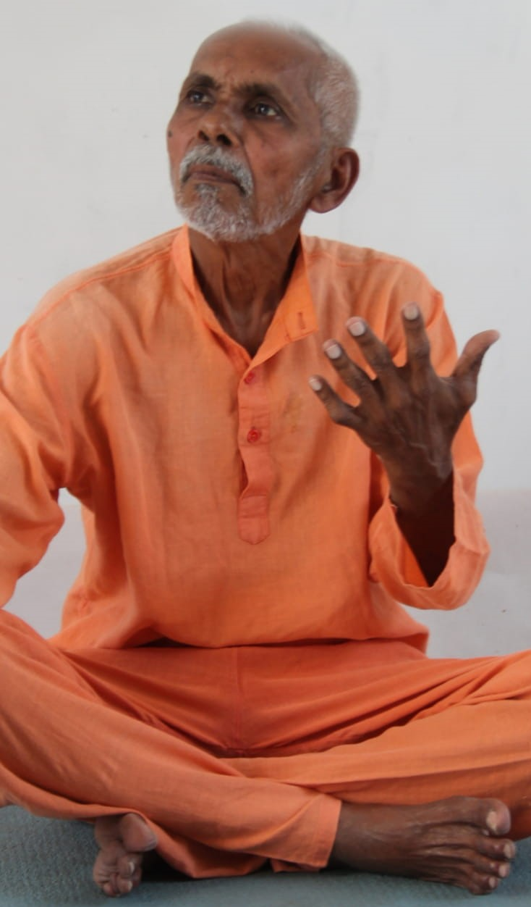

(1) Exercises of eyes
Exercises of eyes are very simple and easy to do and may feel very silly. But the effect of it is very important as it helps us to get sharp eye sight in any age.
1, Squeezing and releasing several times.
2, Blinking for ten sends.
